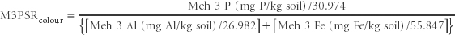

The data used to calculate M3PSRcolour are obtained from the multi-element soil test of Mehlich (1984), specifically Method 18F1 for Mehlich 3-Fe and Mehlich 3-Al and Method 18F2 for Mehlich 3 P, using the colorimetric Murphy and Riley (1962) analytical finish. All input data are expressed as molar concentrations. Expect a slightly lower Mehlich 3 P value with the colorimetric finish relative to the corresponding value obtained by IPCAES (Pierzynski et al. 2005). Interpretative guidance is provided in Method 9K. For brevity, Mehlich is shown as Meh in the next calculation.

Report M3PSRcolour (as a unit-less index value) on a w/w air-dry basis.